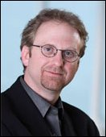

Conference Home

Keynotes
| Wednesday, March 4 | Thursday, March 5 | Friday, March 6 | |
|---|---|---|---|
| 09:00 am- 10:30 am |
Paul Daugherty | John A. Stankovic | Gail Murphy |
All keynotes will be held in the Ballroom.
{kind=link}
The Future of Software Architectures for Large-Scale Business Solutions: Modularity, Scalability, and Separation of Concerns
Paul Daugherty, Chief Technology Architect, Accenture
Wednesday, March 4, 9:00 am - 10:30 am
Presentation Slides – [ PDF ]
Abstract – Modern software projects are of large scale, often involving years of development, tens of thousands of days of work effort, and millions of lines of code. This complexity is aggravated by the fact that development is often distributed over several geographic locations, as dictated by cost considerations, the availability of domain specialists, legal requirements, and other factors. Despite advances in development tools and techniques, software initiatives have lagged behind in utilizing novel software engineering methods and techniques effectively to reduce the complexity of large-scale software. The results can be seen in Corporate and Government IT budgets - based on Accenture and Industry research, IT cost overruns are still commonplace, and the cost to "keep the lights on" for fragile legacy applications typically consumes up to 60% IT budgets.
Increased adoption of advanced software engineering techniques holds great promise for solving these key business challenges. For example, modularization holds a promise in reducing complexity of software design by hiding low-level implementations in well-defined units of deployment. Specifically, vendors build platforms that allow architects to design large-scale systems that can be composed out of services on the fly. For example, JBoss built a platform that allows architects to seamlessly integrate Service-Oriented Architecture (SOA) with application and business-process management (BPM) in enterprise distributions. According to research with Accenture's CIO Council, at least 58% of global organizations are implementing or piloting SOA.
Proper separation of concerns is a key to effective modularization. While separation of concerns is more of art than science in the work of software architects, novel technologies that enable effective separation of concerns are gaining traction. Most recently Accenture used AOP on a government project to do audit tracking. It was very successful and the techniques are currently being incorporated in Accenture Delivery Architecture (ADA), which is a standards-based architecture used for very large scale software development. A large focus of our efforts is in making advanced software engineering techniques more "consumable" by across our network of developers - this is done through standardized architectures, reference applications, and training.
The talk will focus on progress that has been made, and challenges ahead in driving further business value through use of these types of techniques. In addition to the areas mentioned, we will focus on related issues such as: requirements traceability, automated software quality assurance, role of DSLs and MDA, and Agile techniques.
 Biography – Paul Daugherty is Accenture's Chief Technology Architect, and also serves as Managing Director of Accenture's Custom and Emerging Systems Integration (SI) business. In the Chief Technology Architect role, Paul is responsible for shaping Accenture's architecture strategy and assets, and for managing over 3,000 technology architects who work around the globe and across industries implementing complex, leading-edge technology solutions for Accenture's clients. His current focus areas include Service Oriented Architectures, Software as a Service, Web 2.0, Cloud Computing, Legacy Renewal, Open Source, and Mobility.
Biography – Paul Daugherty is Accenture's Chief Technology Architect, and also serves as Managing Director of Accenture's Custom and Emerging Systems Integration (SI) business. In the Chief Technology Architect role, Paul is responsible for shaping Accenture's architecture strategy and assets, and for managing over 3,000 technology architects who work around the globe and across industries implementing complex, leading-edge technology solutions for Accenture's clients. His current focus areas include Service Oriented Architectures, Software as a Service, Web 2.0, Cloud Computing, Legacy Renewal, Open Source, and Mobility.
As Managing Director of the Custom and Emerging SI business, Paul has responsibility for Accenture's Systems Integration business on custom platforms, industry and domain-specific software packages, and new/emerging technology platforms.
Prior to these roles, Paul led Accenture's Technology business in the Resources operating group, which serves clients in the utilities, energy, natural resources, and chemicals sectors. Paul has also been instrumental in leading Accenture initiatives in areas such as eCommerce, and more recently, CIO Agenda, which is focused on rapidly growing the architecture and innovation areas of Accenture's business.
Paul has worked with clients in many industries in areas such as complex systems delivery, infrastructure services, architecture, and IT strategy. Paul has also been involved in selling and delivering large Business Process Outsourcing (BPO) and IT Outsourcing (ITO) engagements.
Paul has a degree in Computer Engineering from the University of Michigan. He frequently speaks at conferences on industry and technology issues, and has published articles in a variety of publications. He is Chairman of the Advisory Board of the New York-based Academy of Information Technology, a non-profit organization that works with high schools to increase IT career opportunities for urban youths. Paul is based in New York City, and lives in New Jersey with his wife and four children.
Cyber Physical Systems: Aspects as a Basis for Robustness and Openness
John A. Stankovic, BP America Professor, Department of Computer Science, University of Virginia
Thursday, March 5, 9:00 am - 10:30 am
Presentation Slides – [ PPT | PDF ]
Abstract – As discussed in a recent report for which I was a co-author, "as computers and communication bandwidth become faster and cheaper, computing and communication capabilities will be embedded in all types of objects and structures in the physical environment. Applications with enormous societal impact and economic benefit will be created by harnessing these capabilities in time and across space. We refer to systems that bridge the cyber-world of computing and communications with the physical world as cyber-physical systems (CPS). The internet transformed how humans interact and communicate with one another, revolutionized how and where information is accessed, and even changed how people buy and sell in the marketplace. Similarly, CPS will transform how humans interact with and control the physical world around us. Examples of CPS include medical devices and systems, aerospace systems, transportation vehicles and intelligent highways, defense systems, robotic systems, process control, factory automation, building and environmental control and smart spaces. However, the confluence of recent key technologies is fundamentally altering how these types of systems will operate. For example, the level of uncertainty in which these systems operate is growing (hence the need for greater robustness), and pervasive wireless access is opening these systems to unprecedented dynamic and non-deterministic influences." This talk will describe this new and emerging field called CPS. The talk will focus on what is new and why we need fundamentally new approaches to face robustness and openness challenges. Aspect-oriented programming will be proposed as a possible basis for key work in CPS.
 Biography – John A. Stankovic received his Ph.D. from Brown University in 1979 and then served on the faculty of the University of Massachusetts at Amherst. He came to the University of Virginia as BP America Professor and Chair of the Department of Computer Science in 1997. Professor Stankovic is a Fellow of the IEEE, a Fellow of the ACM, and he served on the Computing Research Association Board of Directors for nine years. He received an IEEE Award for Outstanding Technical Contributions and Leadership in Real-Time Systems, and an Outstanding Scholar Award from the University of Massachusetts. He was Co-Founder and Co-Editor-in-Chief of the International Journal on Real-Time Systems, Editor-in-Chief of IEEE Transactions on Parallel and Distributed Computing, Associate Editor for ACM Transactions on Wireless Sensor Networks, Associate Editor for ACM Transactions on Embedded Systems, and Book Series Editor for Real-Time Systems.
Biography – John A. Stankovic received his Ph.D. from Brown University in 1979 and then served on the faculty of the University of Massachusetts at Amherst. He came to the University of Virginia as BP America Professor and Chair of the Department of Computer Science in 1997. Professor Stankovic is a Fellow of the IEEE, a Fellow of the ACM, and he served on the Computing Research Association Board of Directors for nine years. He received an IEEE Award for Outstanding Technical Contributions and Leadership in Real-Time Systems, and an Outstanding Scholar Award from the University of Massachusetts. He was Co-Founder and Co-Editor-in-Chief of the International Journal on Real-Time Systems, Editor-in-Chief of IEEE Transactions on Parallel and Distributed Computing, Associate Editor for ACM Transactions on Wireless Sensor Networks, Associate Editor for ACM Transactions on Embedded Systems, and Book Series Editor for Real-Time Systems.
Everyday Aspects
Gail Murphy, Professor, Department of Computer Science, University of British Columbia
Friday, March 6, 9:00 am - 10:30 am
Presentation Slides – [ PDF ]
Abstract – Everyday, programmers perform software evolution tasks that require accessing information from, and often making changes to, multiple modules comprising the target software system. For some of these tasks, aspect-oriented programming languages provide a means of improving the modularization of the target system, making it easier to perform desired evolutionary changes. For other tasks, it can be either too difficult or considered too costly to use a language to describe the modularization associated with a task. In many of these cases, we have found it effective to infer a task-specific form of modularity based on how programmers interact with the source comprising the system. This approach is the basis of the Eclipse Mylyn tools and frameworks, which are being used daily by hundreds of thousands of programmers to reduce information overload, enable recall of modularity associated with tasks and improve programming productivity.
Everyday, information workers also perform tasks that require accessing information from, and often making changes to, documents spread across their computer desktops, their organization and the world. How do the tasks of these information workers compare to those of programmers? Could these workers benefit from expressing modularity across information using ideas from aspect-oriented languages? Could these workers benefit from task-specific modularity based on how they access documents and related artifacts?
This talk will consider how ideas from the aspect-oriented community can extend beyond the software domain to improve the interaction of information workers with digital information.
 Biography – Gail Murphy is a Professor in the Department of Computer Science at the University of British Columbia. She joined UBC in 1996 after completing Ph.D. and M.S. degrees at the University of Washington. Before returning to graduate school, she worked as a software developer at a telecommunications company for five years. She also holds a B.Sc. degree from the University of Alberta. She works primarily on building simpler and more effective tools to help developers manage software evolution tasks. In 2005, she held a UBC Killam Research Fellowship and also received the AITO Dahl-Nygaard Junior Prize for her work in software evolution. In 2006, she received an NSERC Steacie Fellowship and the CRA-W Anita Borg Early Career Award. In 2007, she helped co-found and is currently Chair of the Board and COO of Tasktop Technologies Inc. In 2008, she served as the program committee chair for the ACM SIGSOFT FSE conference and received the University of Washington College of Engineering Diamond Early Career Award. One of the most rewarding parts of her career has been collaborating with many very talented graduate and undergraduate students.
Biography – Gail Murphy is a Professor in the Department of Computer Science at the University of British Columbia. She joined UBC in 1996 after completing Ph.D. and M.S. degrees at the University of Washington. Before returning to graduate school, she worked as a software developer at a telecommunications company for five years. She also holds a B.Sc. degree from the University of Alberta. She works primarily on building simpler and more effective tools to help developers manage software evolution tasks. In 2005, she held a UBC Killam Research Fellowship and also received the AITO Dahl-Nygaard Junior Prize for her work in software evolution. In 2006, she received an NSERC Steacie Fellowship and the CRA-W Anita Borg Early Career Award. In 2007, she helped co-found and is currently Chair of the Board and COO of Tasktop Technologies Inc. In 2008, she served as the program committee chair for the ACM SIGSOFT FSE conference and received the University of Washington College of Engineering Diamond Early Career Award. One of the most rewarding parts of her career has been collaborating with many very talented graduate and undergraduate students.